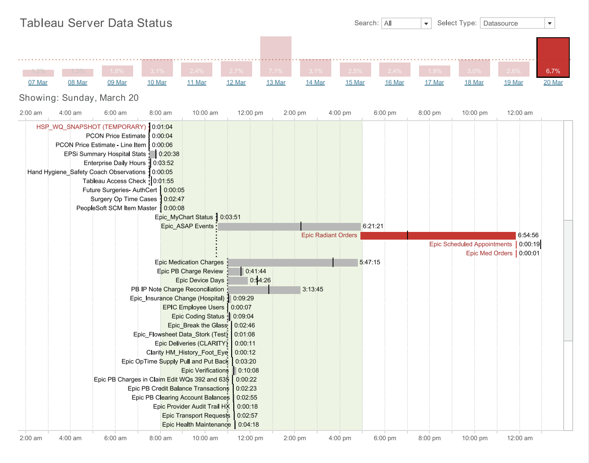
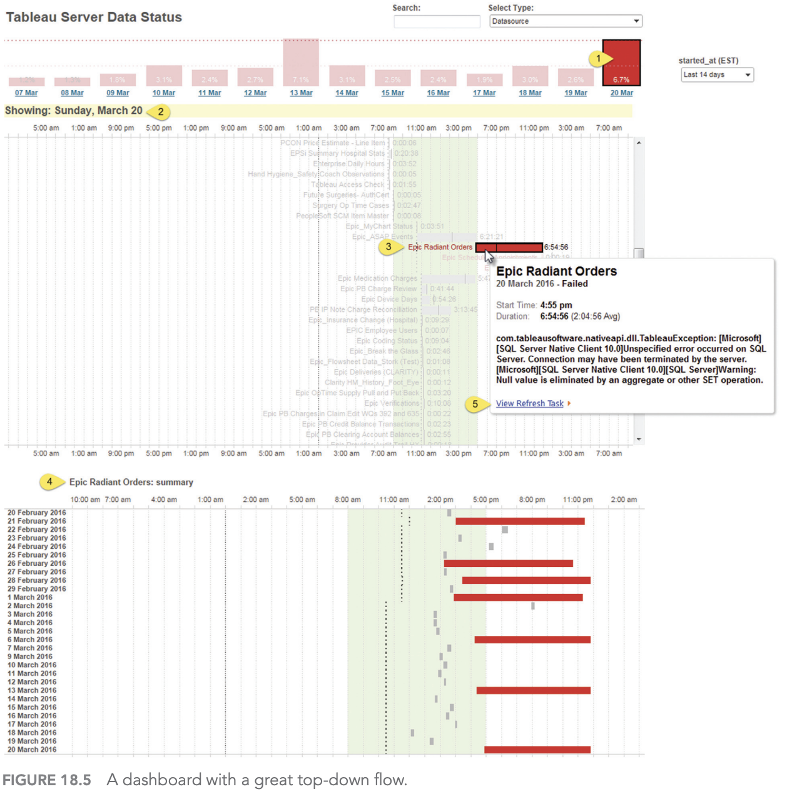
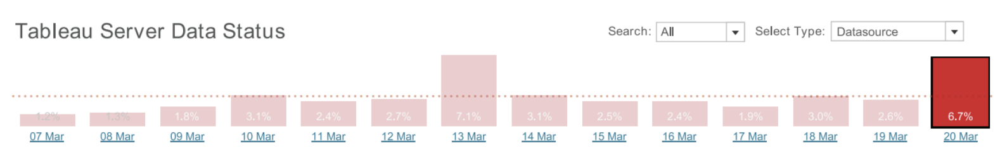
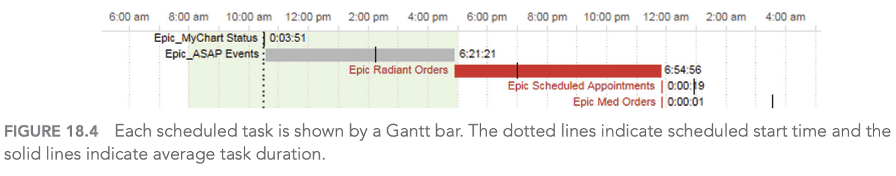
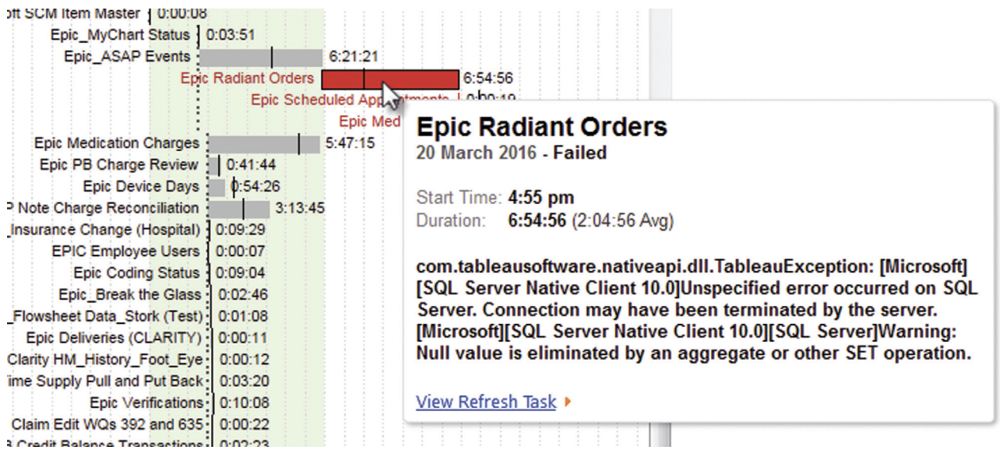
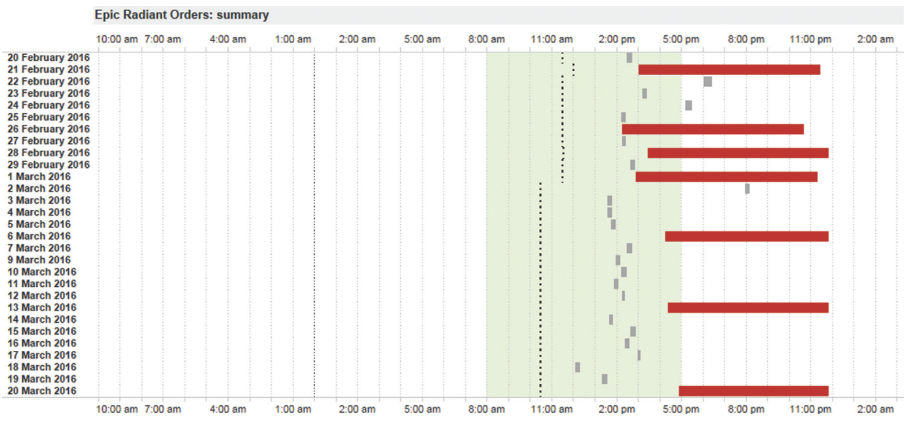
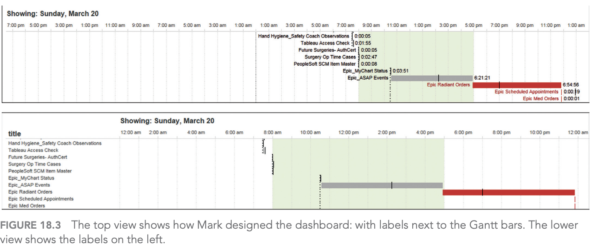

Giám sát quá trình xử lý của máy chủ
Chapter 18: Server Process Monitoring
Dashboard designer: Mark Jackson
Organization: Piedmont Healthcare
Chủ đề: dashboard giám sát tiến trình bị trễ hoặc thất bại trong ngày
Bối cảnh nghiệp vụ
Một BI manager cần đảm bảo hệ thống dữ liệu:
- Online trước khi nhân viên bắt đầu ngày làm việc
- Có dữ liệu mới nhất sau các tiến trình chạy qua đêm
- Báo sớm nếu có tiến trình lỗi hoặc chạy chậm bất thường
Vấn đề chính: nếu phát hiện lỗi muộn, người dùng sẽ bị ảnh hưởng trước khi đội quản trị kịp xử lý.
Dashboard cần trả lời câu hỏi gì?
- Các tiến trình server hôm nay có thành công không?
- Tiến trình nào đã thất bại?
- Các lỗi đó có lặp lại nhiều lần không?
- Tiến trình nào đang mất nhiều thời gian hơn bình thường?
Mục tiêu: đi từ cảnh báo tổng quan đến nguyên nhân cụ thể càng nhanh càng tốt.
Dashboard tổng quan

Dashboard gồm biểu đồ cột 14 ngày, Gantt chart trong ngày và vùng xem chi tiết khi cần.
Luồng khám phá dữ liệu

- Overview: xem hiệu suất server những ngày gần đây
- Zoom/filter: chọn một ngày có vấn đề
- Details on demand: click task để xem chi tiết hoặc mở URL xử lý
Biểu đồ cột: phát hiện ngày bất thường

- Hiển thị tỷ lệ lỗi của 14 ngày gần nhất
- Ngày mới nhất nằm ở phía bên phải
- Đường nét đứt biểu thị mức lỗi trung bình
- Ngày 20/3 có 6.7% tiến trình thất bại
Biểu đồ Gantt: đọc trạng thái tiến trình

- Thanh xám: tiến trình thành công
- Thanh đỏ: tiến trình thất bại
- Đường nét đứt: thời điểm dự kiến bắt đầu
- Đường nét liền: thời lượng trung bình của tiến trình
Tooltip: thêm ngữ cảnh để xử lý lỗi

- Hover vào task để xem thông tin chi tiết
- Cho biết thời gian chạy, trạng thái và mô tả lỗi
- Có URL để đi thẳng đến hệ thống/server liên quan
Ý nghĩa: dashboard không chỉ báo lỗi, mà còn rút ngắn bước điều tra tiếp theo.
Detail view: lỗi có lặp lại không?

- Xem lịch sử riêng của một tiến trình trong khoảng 1 tháng
- Epic Radiant Orders đã thất bại 7 lần
- Các lần lỗi thường gắn với việc bắt đầu muộn
Kết luận: đây có thể là lỗi có tính hệ thống, không phải sự cố đơn lẻ.
Vì sao đặt nhãn ngay trên Gantt bar?

- Cách phổ biến: đặt tên task ở lề trái
- Cách Mark chọn: đặt nhãn gần ngay thanh Gantt
- Khi thấy thanh đỏ, mắt người xem thấy luôn tên tiến trình
Đánh đổi: hơi rối hơn, nhưng phản ứng nhanh hơn.
Điểm mạnh và hạn chế thiết kế
Điểm mạnh
- Đơn giản, ít thành phần thừa
- Trả lời đúng 3 câu hỏi chính mỗi sáng
- Dẫn người dùng từ cảnh báo đến hành động
- Dùng màu đỏ/xám rõ nghĩa
Hạn chế
- Một số nhãn bị chồng lên đường tham chiếu
- Gantt chart có thể rối nếu nhiều tiến trình hơn
- Phù hợp với người dùng cá nhân hơn là toàn tổ chức
Kết luận
3 bài học chính
- Dashboard tốt bắt đầu từ câu hỏi nghiệp vụ rõ ràng
- Thiết kế hiệu quả cần dẫn người dùng từ tổng quan đến chi tiết
- Với dashboard vận hành, giá trị lớn nhất là phát hiện nhanh và hành động nhanh